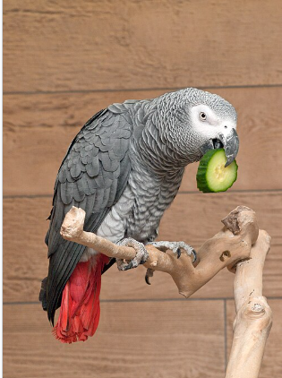
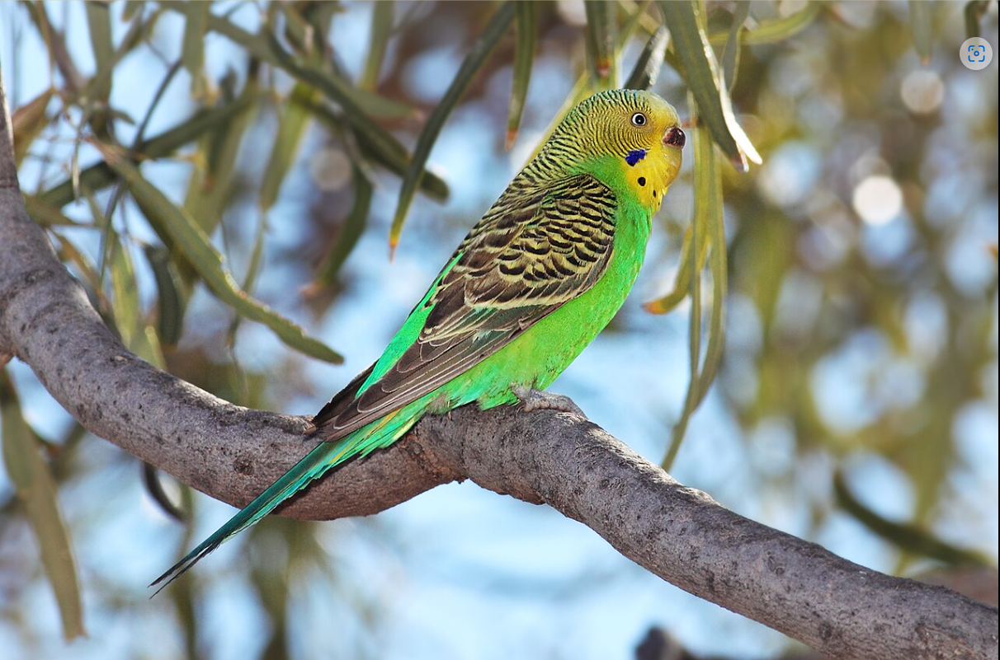
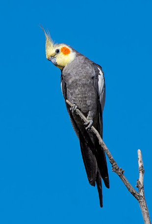
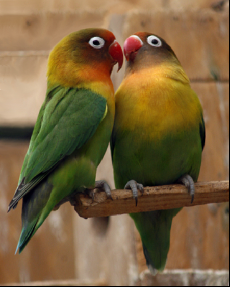
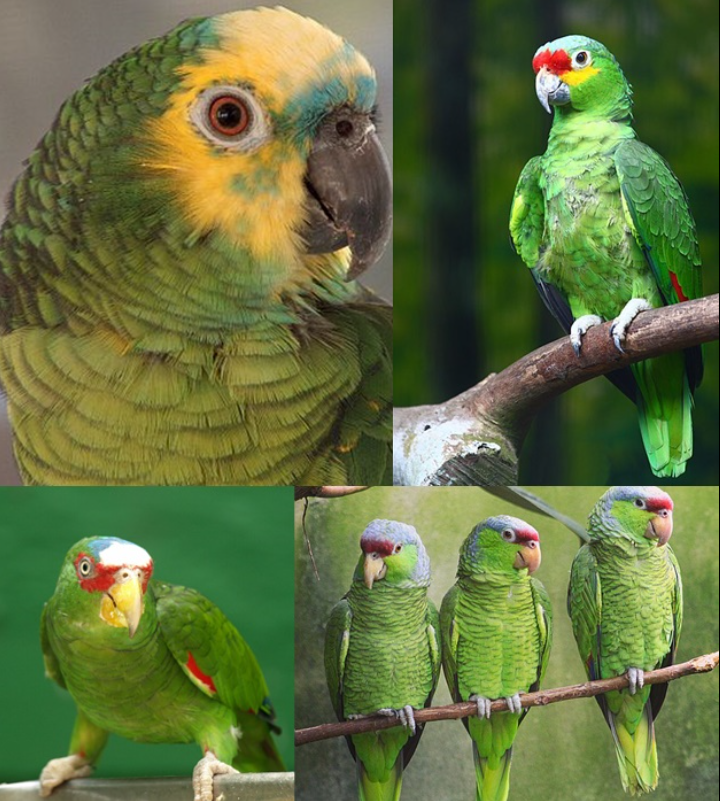
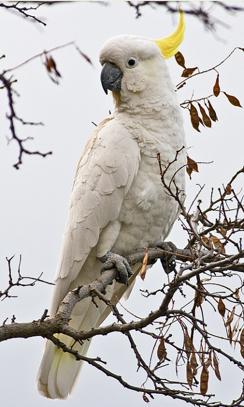
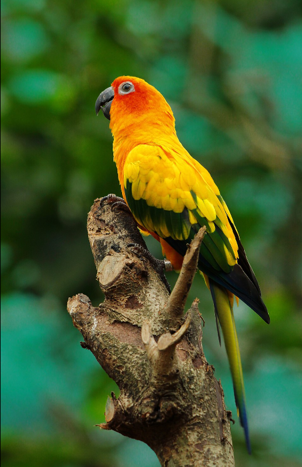

Why do all people love parrots?
🦜Introduction🦜
Parrots are beautiful and intelligent birds known for their colorful feathers, curved beaks, and ability to imitate sounds. They are found in many parts of the world, including Australia, Africa, Asia, and the Americas. There are hundreds of recognized parrot species, ranging from small parakeets to large macaws.
Source: BirdLife International — Everything You Need to Know About Parrots🌿 What Is a Parrot?
Parrots belong to the bird order Psittaciformes. They have strong, hooked beaks and four toes on each foot, with two pointing forward and two backward. These special feet help them climb and hold objects such as food.
Source: BirdLife International — Everything You Need to Know About Parrots🌈 Types of Parrots
There are many different s of parrots. Some of the best-known groups include Macaws, African Grey Parrots, Budgerigars, Cockatiels, Lovebirds, Amazon Parrots, Cockatoos, and Conures.
Source: BirdLife International- Macaws🦜
- African Grey Parrot
- Budgerigar (Budgie) 💚
- Cockatiel 🧡
- Lovebirds ❤️
- Amazon Parrots 💛
- Cockatoos 🤍
- Conures 💜

Macaws are large, colorful parrots with long tails. They are mainly found in Central and South America. There are several species of macaws, including the Hyacinth Macaw, Scarlet Macaw, and Blue-and-yellow Macaw.
Source:Wikipedia
The African Grey Parrot is well known for its intelligence and ability to imitate human speech. It is native to parts of Africa and has faced serious threats from trapping and habitat loss. The Grey Parrot, also known as the African Grey Parrot, is a medium-sized African parrot. It is mostly grey, with a red tail, and is well known for its intelligence and ability to imitate sounds.
Source:Wikipedia
The Budgerigar is a small, long-tailed parrot native to Australia. It is usually green and yellow in the wild, although many different colors have been bred in captivity. Budgerigars are also known for their ability to imitate human speech.
Source:Wikipedia
The Cockatiel is a small Australian parrot and a member of the cockatoo family. It is recognizable by its head crest, long tail, and distinctive appearance.
Source:Wikipedia
Lovebirds are small parrots belonging to the genus Agapornis. They are native to Africa and are known for their social behavior and colorful feathers.
Source:Wikipedia
Amazon parrots are medium-sized parrots mainly found in Central and South America and the Caribbean. Many species have predominantly green feathers. They are also known for their vocal communication and ability to imitate sounds.
Source:Wikipedia
Cockatoos are parrots belonging to the family Cacatuidae. They are mainly found in Australia and nearby islands. Many cockatoos have a distinctive crest of feathers on their heads. The family includes white, pink, grey, and black species.
Source:Wikipedia
Conures are a group of small to medium-sized parrots found mainly in the Americas. They include several different genera and species and are often known for their colorful feathers and active behavior.
Source:Wikipedia🥜 What Do Parrots Eat?
Depending on the species and habitat, parrots may eat fruits, seeds, nuts, flowers, leaves, and other plant material. Their strong beaks allow them to open and eat many hard foods.
Source: BirdLife International🧠 Why Are Parrots Intelligent?
Parrots are famous for their intelligence and complex social behavior. Some species can learn to imitate human speech and other sounds. Their intelligence can also be seen in problem-solving and tool use in some species.
Source: BirdLife International🌳 Parrots and Nature
Parrots are important to their ecosystems. When they eat fruits and move between trees, they can help spread seeds and contribute to forest regeneration.
Source: BirdLife International⚠️ Threats to Parrots
Many parrot species are threatened by habitat destruction, logging, agriculture, hunting, and trapping for the wildlife trade. Protecting natural habitats is an important part of parrot conservation.
🌎 Conclusion
Parrots are remarkable birds with colorful feathers, powerful beaks, special feet, and impressive intelligence. From small Budgerigars to large Macaws, they have adapted to many different environments.
Parrots are not only beautiful animals; they also have important roles in nature. Protecting their habitats and preventing illegal wildlife trade can help protect these amazing birds for the future.
Source: BirdLife InternationalYou can buy supplies and food for your parrot fromFereydoun Pet Shop’s website.
For more information, you can visit Wikipedia